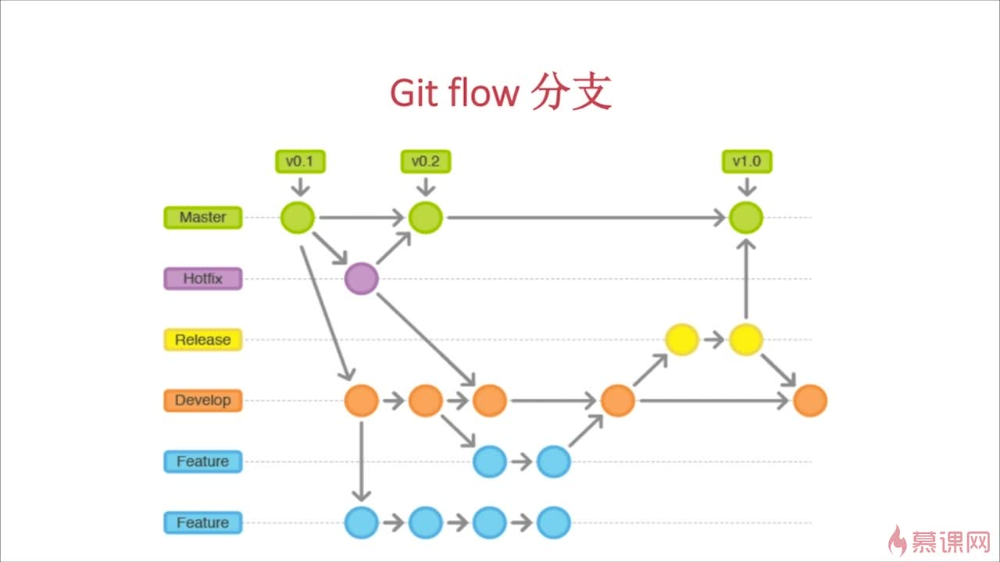

Git
github 账号
微软 outlook 邮箱
git 配置
在使用 git 之前你需要配置一下 git。git 在你创建提交的时候会记录你的名字和 email 地址，所以你应该告诉 git 这些内容。可以使用'git config'命令来设置。
git config --list
git config --global user.name "你的用户名"
git config --global user.email "你的邮箱"
git config --global core.autocrlf false
创建 SSH Key
- 创建 SSH Key： ssh-keygen -t rsa -C 你的邮箱
- 将生成的 id_rsa.pub 里面的内容复制到 github 的 add ssh 中
- 验证 github: ssh -T git@github.com
- 验证 gitee: ssh -T git@gitee.com
gist.github.com 被墙无法访问解决办法
windows 下 打开 C:\Windows\System32\drivers\etc\hosts 文件 编辑器打开，在最后行添加 192.30.253.118 gist.github.com
创建本地仓库并推送到远程的过程
- 在远程创建 repository,获得远程仓库地址(https/ssh)如：https://github.com/lujiandi/mmall.git
- 新建一个目录 [project-name]
- 创建配置 .gitignore 文件，忽略指定类型的文件和目录。
- 创建文件 README.md
- 项目初始化(git init)
添加文件(单个文件指定文件名)
git add .提交本地
git commit -am "commit message"连接到远程
git remote add origin https://github.com/lujiandi/mmall.git推送到远程 xxx 分支(强制推 加上 -f )
git push -u origin xxx
其它命令
状态(查看有哪些文件发生变化)
git status
查看 tag
git tag
添加 tag
git tag -a vx.x.x -m "vx.x.x 版本"
推送 tag
git push -u origin xxxx
删除 tag
git tag -d xxx
删除远程 tag
git push origin :refs/tags/xxxx
查看分支
git branch
git branch -a #查看远程分支
git branch -r
根据原有分支创建进切换到新分支
git checkout -b v1.0 origin/master
切换分支
git checkout xxx
删除分支
git branch -d xxxx
删除远程分支
git push origin --delete xxxx
(拉)更新远程到本地，
git pull
log 本地提交记录 可以回到过去
git log
reflog 当前版本的记录
git reflog
取消暂存
git reset HEAD fileName
恢复文件
git checkout fileName
本地回到某次提交的版本(影响所有文件)
git reset --hard 04f76726c53d58992dfb2d55417b0eb9452c75b2
diff(没有 commit)
git diff
#比较工作区与暂存区文件的差异 merge 合并 xxx 到前分支
git merge xxx
下载一个项目和它的整个代码历史
git clone [url]
远程关联
git remote -v ：查看远程关联
git remote add xxx 远程地址 ：关联远程,xxx 为远程仓库名，git push -u xxxx 本地分支
git remote remove xxx :取消关联
gitflow
